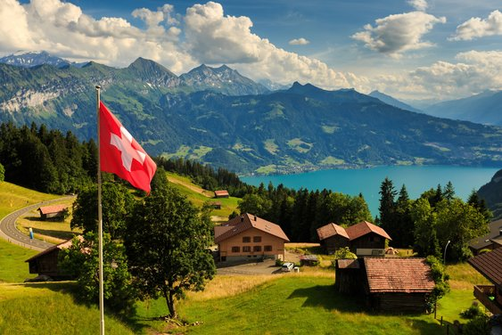

- Canada

Canada is known for its stunning natural beauty, including national parks, mountains, and lakes.
- Germany
Germany offers a rich history, vibrant cities, and beautiful countryside.
- Japan

Japan is famous for its unique culture, delicious cuisine, and advanced technology.
- South Korea
South Korea is known for its dynamic cities, rich traditions, and beautiful landscapes.
- Hongkong
Hongkong is a bustling metropolis known for its skyline, shopping, and vibrant culture.
- Netherlands
The Netherlands is famous for its picturesque canals, tulip fields, and windmills.
- Spain

Spain is known for its rich history, diverse culture, and beautiful architecture.
- Switzerland

Switzerland is renowned for its stunning landscapes, including the Alps and pristine lakes.
- Taiwan
Taiwan is known for its vibrant night markets, beautiful temples, and friendly people.
- Maldives

The Maldives is famous for its crystal-clear waters, white sandy beaches, and luxury resorts.